თეოდორ დოსტოევსკი
თედორე მიხეილის ძე დოსტოევსკი - რუსი რომანისტი, მწერალი და ესეისტი. დოსტოევსკის ლიტერატურული ნაწარმოებები უღრმავდება ადამიანთა ფსიქოლოგიას XIX საუკუნისრუსეთის რთულ პოლიტიკურ, სოციალურ და სულიერ კონტექსტში...

წიგნები
-
-
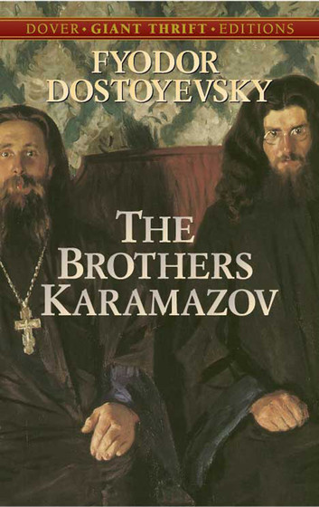
-
ძმები კარამაზოვები
ძმები კარამაზოვები“ რუსი მწერლის თედორე დოსტოევსკის ბოლო რომანი, რომელიც მისი ცხოვრებისეული შრომის კულმინაციას წარმოადგენს. დოსტოევსკიმ ამ რომანის შექმნას ორი წელი დაუთმო...
-
ძმები კარამაზოვები
„ძმები კარამაზოვები“ რუსი მწერლის თედორე დოსტოევსკის ბოლო რომანი, რომელიც მისი ცხოვრებისეული შრომის კულმინაციას წარმოადგენს. დოსტოევსკიმ ამ რომანის შექმნას ორი წელი დაუთმო...
-
-
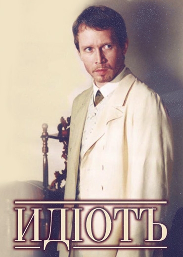
-
ძმები კარამაზოვები
ძმები კარამაზოვები“ რუსი მწერლის თედორე დოსტოევსკის ბოლო რომანი, რომელიც მისი ცხოვრებისეული შრომის კულმინაციას წარმოადგენს. დოსტოევსკიმ ამ რომანის შექმნას ორი წელი დაუთმო...
-
იდიოტი
რომანის მთავარი გმირი, ოცდაექვსი წლის თავადი ლევ მიშკინი შვეიცარიის ერთ-ერთ სანატორიუმში გატარებული რამდენიმე წლის შემდეგ რუსეთში ბრუნდება. გულუბრყვილობისა და ბუნებრივი ხასიათის გამო სანქტ-პეტერბურგის საზოგადოება მას შეიძულებს. მოულოდნელად იგი აღმოჩნდება კოხტად შენახული ქალისა (ნასტასია) და სათნო, კოხტა ახალგაზრდა გოგოს (აგლაია) ბრძოლის ცენტრში...
-
-
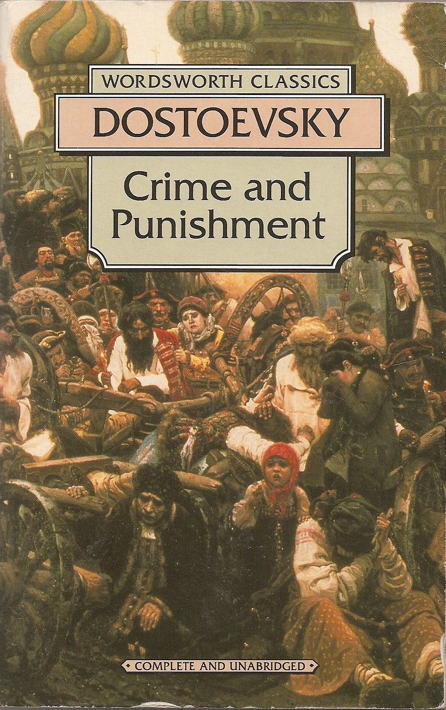
-
ძმები კარამაზოვები
ძმები კარამაზოვები“ რუსი მწერლის თედორე დოსტოევსკის ბოლო რომანი, რომელიც მისი ცხოვრებისეული შრომის კულმინაციას წარმოადგენს. დოსტოევსკიმ ამ რომანის შექმნას ორი წელი დაუთმო...
-
დანაშაული და სასჯელი
სიუჟეტი ვითარდება მთავარი გმირის როდიონ რასკოლნიკოვის ირგვლივ, რომლის გონებაშიც მწიფდება დანაშაულის თეორია. რასკოლნიკოვი უკიდურესად ხელმოკლეა, მას არა თუ უნივერსიტეტში სწავლის საფასურის, არამედ საცხოვრებლის ქირის გადახდაც კი არ შეუძლია. უღარიბესნი არიან მისი და და დედაც. მოულოდნელად ის შეიტყობს, რომ თავის და (დუნია რასკოლნიკოვა) აპირებს ცოლად გაჰყვეს კაცს, რომელიც სულაც არ აპირებს ფინანსურად დაეხმაროს მეუღლის ოჯახს. ...
-
-
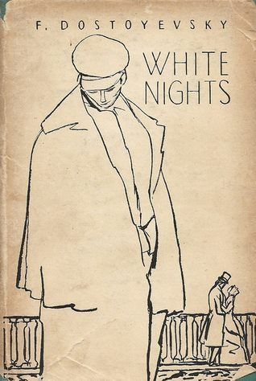
-
ძმები კარამაზოვები
ძმები კარამაზოვები“ რუსი მწერლის თედორე დოსტოევსკის ბოლო რომანი, რომელიც მისი ცხოვრებისეული შრომის კულმინაციას წარმოადგენს. დოსტოევსკიმ ამ რომანის შექმნას ორი წელი დაუთმო...
-
თეთრი ღამეები
დოსტოევსკის „თეთრი ღამეები“ სიმბოლურად 5 თავისგან შედგება: ოთხი ღამე და დილა. თეთრმა, თავგადასავლებიანმა და რომანტიკულმა „ღამეებმა“ ნაწარმოების მთავარი გმირის მსოფლმხედველობა რადიკალურად შეცვალეს. ნასტენკასთან შეხვედრამ ჩვენი უსახელო, მეოცნებე გმირი მათრობელა ფანტაზიებისგან განკურნა. ოცნებების ადგილი, ახლა უკვე რეალურმა გრძნობებმა დაიკავა. ჩვენ გმირს მთელი არსებით უყვარდება ნასტენკა. მისი სიყვარული გოგონას მიმართ კი საოცრად წმიდა და უანგაროა. მისი სიყვარული იმდენად უანგაროა, რომ ის მზადაა ნასტენკას ბედნიერების გამო თავის სიყვარულსა და ბედნიერებაზეც კი თქვას უარი და ასეც იქცევა კიდეც... ის უარს ამბობს თავის სიყვარულზე, რათა ნასტენკა იყოს ბედნიერი...
"იმიტომაა ჩემთვის ღმერთი აუცილებელი, რომ მხოლოდ მისი შეყვარება შეიძლება სამარადისოდ"
თეოდორ დოსტოევსკიბიოგრაფია
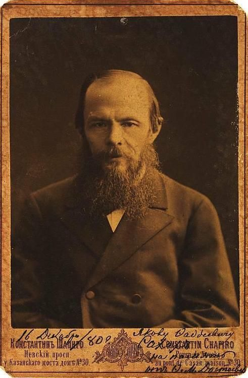
ბიოგრაფია
თეოდორ დოსტოევსკი
ბავშვობა
დოსტოევსკი ოჯახთან ერთად გაიზარდა, მარინსკის ჰოსპიტლის მიწისქვეშა სართულზე მდებარე სახლში. ამ პერიოდში ოჯახი ყოველ ზაფხულს დაროვოეს მამულში ატარებდა. სამი წლის ასაკში თედორე გაეცნო საგმირო თქმულებებს, მათ შორის ზღაპრებს, ლეგენდებს და ძიძიების გავლენით, ღრმად შეითვისა ღვთისმოსაობა. მის ბავშვობაზე ყველაზე დიდი ზეგავლენა მოახდინეს ძიძამ — ალინა ფროლოვნამ და ოჯახის მეგობარმა, დოროვოელმა ყმა გლეხმა მარეიმ. მარეი თედორეს ჰალუცინაციებთან გამკლავებაში ეხმარებოდა
ადრეული კარიერა
1844 წელს დოსტოევსკი ბინაში აკადემიის მეგობარ დიმიტრი გრიგორიევიჩთან ერთად ცხოვრობდა. სწორედ ამ დროს დაიწყო მან პირველ რომანზე მუშაობა იმ იმედით, რომ მკითხველთა ფართო წრეს მოიპოვებდა და ფინანსურ მდგომარეობას გაიუმჯობესებდა. თავის ძმასთან, მიხეილთან მიწერილ წერილში ის წერს: „ეს ის შემთხვევაა, როდესაც ყველაფერი ჩემს რომანზეა დამოკიდებული, თუ თავს ვერ გავართმევ, თავს ჩამოვიხრჩობ“.
„საშინელება ის არის, რომ სილამაზე არა მხოლოდ საშიშია, არამედ იდუმალიც, აქ ეშმაკი ღმერთს ებრძვის, ბრძოლის ველი კი — ადამიანთა გულებია“
თეოდორ დოსტოევსკიპერსონაჟები
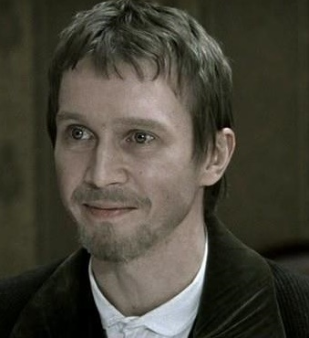
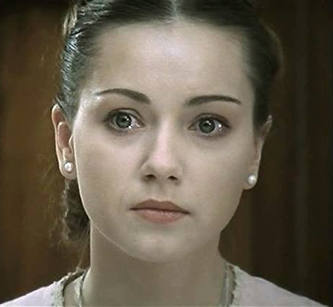
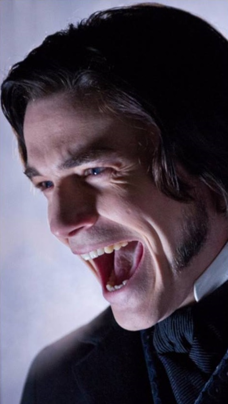
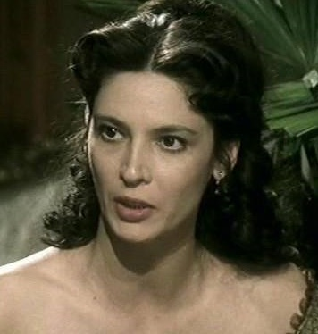
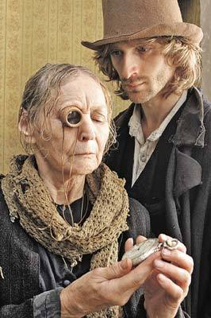
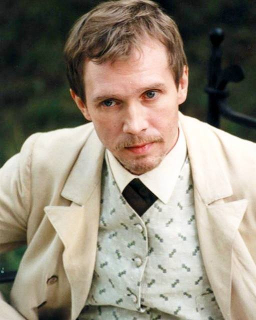
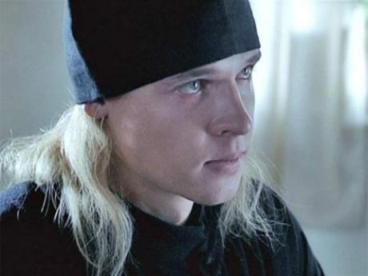
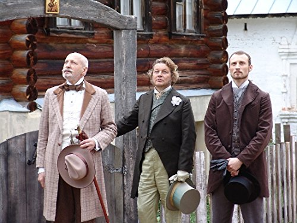
„სინდისი – ეს არის ღმერთის მოქმედება ადამიანში!“
თეოდორ დოსტოევსკირეცენზიები
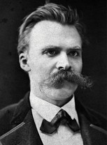
ფრიდრიხ ნიცშე
ნიცშე უზარმაზარი ოკეანის ტალღა იყო, რომელმაც უმოწყალოდ გადაუარა სულიერად დაჟანგებულ დასავლეთს. აღსანიშნავია, რომ ჯვარცმული დიონისოს აზროვნების ხერხემალი არ აღმოჩნდა იმდენად მტკიცე, ბოლომდე გაეძლო და გასულიყო დეკადენტური ევროპისათვის გამოსავლისა და ხსნის საძიებელ გზაზე. ნიცშე შინაგანად განიცდიდა თავის ირგვლივ არსებულ კრიზისს და გრძნობდა, რომ დასავლური ცივილიზაცია სიკვდილით სუნთქავდა. საქართველოში ამ ნიუანსს უზუსტესად სწვდა ფშაველი მინდია-ვაჟა. შემთხვევით არ დაახასიათა მან ნიცშეს მხოფლმხედველობა, როგორც “უხერხემლო”. დოსტოევსკიმაც იტვირთა თავისი ხალხის ცოდვები და კაცობრიობის დასავლეთევროპული კრიზისი, რომლებიც შინაგანი სუბლიმირების გზით გადალახა და ამაღლდა მათზე, აღსდგა მკვდრეთით, გასცდა ნიცშეს მიერ გადაულახავ სამანს და ამგვარად, რუსეთსაც და კაცობრიობასაც ხსნის გზა მიუთითა.
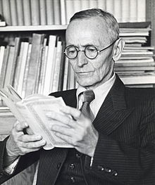
ჰერმან ჰესე
ჰესე გვაფრთხილებს რომ კარამაზოვები არიან ისტერიულები და საშიშები, ისინი იოლად ხდებიან როგორც დამნაშავეებად ისე ასკეტებად, მათ არაფრისა სწამთ, მათი გიჟური და შეშლილი რწმენაა ყოველგვარი რწმენის საეჭვოობა. ჰესე ფიქრობდა რომ დასავლეთ ევროპის "მეთოდურ და ორგანიზებულ სამყაროს" ტოლსტოიმ და დოსტოევსკიმ შთაბერეს "პირველქმნილი სიყვარული" რომელმაც უნდა განაახლოს სულიერად ევროპა მსოფლიო ომის დამთავრების შემდეგ.
ყველა უდიდესი რომანის მსგავსად, „ძმებმა კარამაზოვებმაც“ თავდაპირველადვე ორი სრულიად განსხვავებული განცდა გამიჩინა: ვიგრძენი, რომ ამ ქვეყანაზე მარტო არ ვიყავი, მაგრამ, ამავე დროს, უმწეოდ და ყველასაგან მოწყვეტილადაც ვიგრძენი თავი, რა საიდუმლო ჩამჩურჩულა დოსტოევსკიმ „ძმები კარამაზოვებითა“ და თავისი სხვა უდიდესი რომანებით? იმის თქმა ხომ არ უნდოდა, რომ ყოველთვის ღმერთისა და რწმენის ძიებაში უნდა ვიყოთ, მიუხედავად იმისა, რომ ადამიანს არ ძალუძს, ბოლომდე რამე იწამოს? ჩვენში ხომ არ არის ჩასახლებული ეშმაკი, რომელიც ჩვენს ყველა ღრმა რწმენას ებრძვის? ხომ არ ცდილობდა დავერწმუნებინე, რომ ბედნიერება არც ვნებაშია, არც სიყვარულში და არც გენიალურ აზრებში; ის სრულიად სხვაგან - თავმდაბლობასა და მორჩილებაშია.

ვირჯინია ედელინ ვულფი (ქალიშვილობაში სტეფენი) დაიბადა ლონდონში 1882 წლის 25 იანვარს. მამამისი, ლესლი სტეფენი ვიქტორიანული ეპოქის ცნობილი მწერალი და კრიტიკოსი იყო. ვირჯინიას მშობლები ვულფის 1927 წელს დაწერილი რომანის „შუქურასკენ“ გმირების, მისტერ და მისის რამსეების პროტოტიპები არიან..
"რაც უფრო ბნელია ღამე, მით უფრო ნათლად ბრწყინავენ ვარსკვლავები, რაც უფრო ღრმაა სევდა, მით უფრო ახლოსაა ღმერთი ჩვენთან!"
თეოდორ დოსტოევსკი
კონტაქტი
დაგვიკავშირდით თუ გაქვთ რაიმე შეკითხვა დოსტოევსკის შესახებ. ჩვენ შევეცდებით თქვენი მოთხოვნის დაკმაყოფილებას უმოკლე დროში...
www.facebook.com/DostoevskyGeo
Dostoevsky@gmail.com
თბილისი, საქართველო